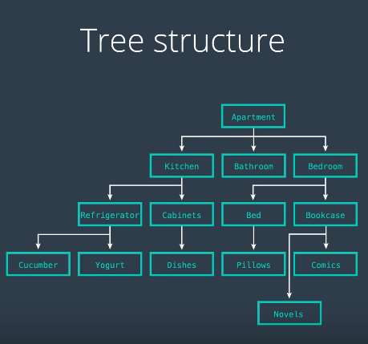

Cascading Style Sheets(CSS) Is a computer language for describing the visual appearance of web pages. CSS affects attributes of the page such as font, color, and layout. Every browser has something called the developer tools. In the elements tab, the developer tools displays the html code of the page and under that code there is a small box where you can view the style of the selected element(the CSS)
Before html is displayed in a browser, there is a middle step that determines how the text from the html file will be displayed. This middle part is known as a data structure, an organized map of what will appear on the page. Because this step is determining how the page looks, it will have a lot to do with styling and CSS. When a browsers is reading a html file, it will use a layout to determine what needs to be presented on the screen, similar to an outline. This layout maps the elements that are nested inside other elements. This outline takes the shape of a tree(tree structure) and is known as the document object model(DOM). It is formed by the browser reading the html file. It is also what you are looking at when you use the developer tools in the browser.
Tree structures are made up of nodes(or elements) that have connections call branches. In the diagram below the nodes are the boxes and the arrows are the branches. Nodes have relationship between them, in this example the branches represent what is inside what.

A tree has a root which is the start of the tree, in html, the html element is the root. The "children" is where the root branches off; in the case of html, the body is the children. In the example below, the head element has the title as a child, and the body has the p element. This also mean thats the p and title has a parent node.

A tree structure. is not a diagram, it is a data structure - a way that information can be organized. How we display this information is secondary. There are a set of rules that tree structure must follow:
One way to apply CSS is to directly apply it to that element(inline); however, its better to group the elements together another one catagory. This information will be placed in the head element inside the style tag.